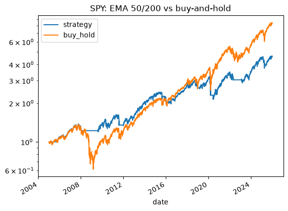
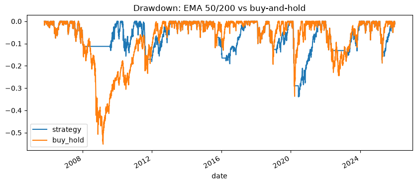
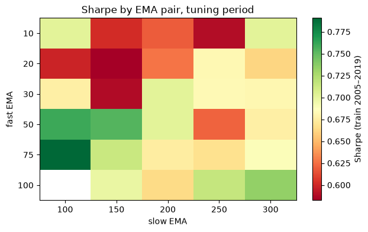

Trend-following backtest: SPY, QQQ, GLD (2005–2025)
Rendered notebooks · Research note · Project README · requirements.txt
Question
Does a simple EMA crossover trend rule beat buy-and-hold after costs, and does an ML filter improve it?
Answer (from the README): No on both. On the untouched 2020–2025 test period, the tuned EMA 75/100 rule returned 7.2% a year on SPY vs 15.0% for buy-and-hold. It did cut the worst drawdown a little (-30.4% vs -33.7%). Neither ML model beat the always-up baseline, so the final rule has no filter.
Data
Daily prices for SPY, QQQ and GLD from 2005-01-03 to 2025-12-31, downloaded with yfinance (Yahoo Finance): 5,283 rows per ticker, no nulls. Prices are stored in a local PostgreSQL database trading (table prices, primary key ticker + date), and backtest results are logged to a backtest_runs table. The rule uses adjusted close. The price data isn’t committed; running 01_load_data downloads it again.
Methods and tools
Python, pandas, NumPy, yfinance, PostgreSQL, SQLAlchemy, scikit-learn, matplotlib
- Rule: long when EMA(fast) > EMA(slow) on adjusted close, otherwise cash. The signal is shifted one day so every trade uses yesterday’s information (no look-ahead).
- Costs: 0.05% per trade, included in every number. Warm-up: the first 200 trading days are skipped so the EMAs are valid.
- Baseline (Phase 1): EMA 50/200 vs buy-and-hold over the full period.
- Tuning (Phase 2): a grid of 29 EMA pairs tested on 2005–2019 only, plus a yearly walk-forward over 2010–2019. The chosen pair was locked before touching the test period.
- ML filter (Phase 3): 7 backward-looking features (RSI14, MACD histogram / price, 5-day return, 60-day return, 20-day volatility, distance from EMA200, volume ratio). Target: SPY up over the next 5 days. Trained on 2005–2015, validated on 2016–2019, with logistic regression and a random forest.
- Test (2020–2025): run once, after every choice above was locked.
Results (test period 2020–2025, run once, costs included)
| Ticker | Rule CAGR | Rule Sharpe | Rule Max DD | B&H CAGR | B&H Sharpe | B&H Max DD |
|---|---|---|---|---|---|---|
| SPY | 7.2% | 0.52 | -30.4% | 15.0% | 0.78 | -33.7% |
| QQQ | 19.6% | 1.00 | -28.6% | 20.1% | 0.85 | -35.1% |
| GLD | 15.1% | 1.02 | -24.8% | 18.6% | 1.13 | -22.0% |
Rule = EMA 75/100 long-or-cash. B&H = buy-and-hold. From the README; matches the final-test output in 04_ml_filter.
Key findings
- On SPY the tuned rule lost to buy-and-hold on the test period: 7.2% vs 15.0% CAGR, Sharpe 0.52 vs 0.78, with a slightly smaller max drawdown (-30.4% vs -33.7%).
- The rule beat buy-and-hold on a risk-adjusted basis only on QQQ (Sharpe 1.00 vs 0.85), which is 1 of 3 tickers. The research note flags that, with 29 parameter pairs tried, that win could be luck.
- Baseline EMA 50/200 over the full period: 7.9% CAGR, 0.61 Sharpe, -33.9% max drawdown, vs buy-and-hold 11.1%, 0.64, -55.2% (21 trades, 79.3% time in market).
- Tuning: EMA 75/100 was best in-sample on 2005–2019 (Sharpe 0.79). Walk-forward picked it in 8 of 10 years. Over 2010–2019 the walk-forward Sharpe was 0.734 vs 0.689 for fixed 50/200 and 0.933 for buy-and-hold.
- ML filter: on the 2016–2019 validation period, logistic regression and random forest both scored 63.5% accuracy vs a 64.1% always-up baseline (logistic regression predicted “up” on 99.4% of days), so the filter was dropped.
- From the research note: the rule protects in slow bear markets (in 2008 it limited the worst drop to about 11% while buy-and-hold fell 55%) but fails in fast, V-shaped crashes like 2020, where it rode the market down about 33% and bought back in late.
- Conclusion in the research note: he would not paper-trade it, because it doesn’t beat a simple buy-and-hold on SPY after costs.
Limitations (from the README)
- Testing 29 pairs invites overfitting (the multiple-testing problem). The walk-forward and the one-time test period reduce this but don’t remove it.
- The costs are a flat estimate. Slippage, taxes, and cash yield aren’t modeled.
- There are only three tickers, one rule family, and one test period.
Charts



Notebooks
| Notebook | What it does | Links |
|---|---|---|
| 01_load_data | Download daily prices for SPY, QQQ, GLD with yfinance and load them into Postgres 8 code cells, 6 with outputs, 0 charts | Rendered · .ipynb |
| 02_baseline | EMA 50/200 vs buy-and-hold, equity and drawdown charts 7 code cells, 3 with outputs, 2 charts | Rendered · .ipynb |
| 03_tuning | EMA grid on 2005–2019, Sharpe heatmap, walk-forward, locking the tuned pair 10 code cells, 5 with outputs, 1 chart | Rendered · .ipynb |
| 04_ml_filter | Features, logistic regression / random forest filter test, final 2020–2025 backtest 10 code cells, 6 with outputs, 0 charts | Rendered · .ipynb |
Full write-up: research note. How to rerun (Python 3.10+, local PostgreSQL, password in ~/.pgpass): see the project README and requirements.txt.